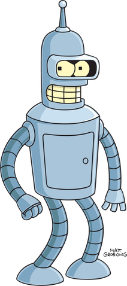

Бе́ндер Згинач Родрі́ґес
Біографія
Бе́ндер, він же Бе́ндер Згинач Родрі́ґес (англ. Bender Bending Rodríguez)
— герой мультиплікаційного серіалу Футурама, робот-згинач, зібраний у
2998 році в Мексиці.
Назва моделі Бендера — «Пристрій для згинання 22 (Bending-Unit 22)»,
серійний номер 2716057. Ця модель була створена професором Фарнсвортом
у молодості.
Бендер — комічний антигерой, п'яниця, лихослов і завзятий курець,
шанувальник порнографії для роботів (у вигляді електричних схем),
злодій-рецидивіст (вірніше, клептоман), кухар (хоча, зважаючи на
відсутність відчуття смаку, його їжа в переважній більшості випадків
щонайменше неїстівна, або навіть небезпечна для життя). Зазвичай
Бендер поводиться як закінчений цинік і людиноненависник, проте зрідка
в ньому прокидається співчуття (наприклад, до черепахи в серії «Crimes
of the Hot»), що викликає щирий подив його товаришів. У деяких
епізодах Футурами Бендер є головною дійовою особою. У Бендера є
двійник Флексо, який також є роботом-згиначем і відрізняється від
Бендера лише наявністю трикутної борідки.
Історія
Спочатку Бендер працював на фабриці згиначем балок, проте пішов звідти
після того, як дізнався, що ці балки використовуються для створення
будок самогубств. Намагаючись покінчити зі своїм позбавленим сенсу
життям за допомогою однієї з таких будок, він зустрічається з Філіпом
Фраєм, який не тільки відмовляє його від самогубства, але й стає його
приятелем.
Бендер і Фрай живуть у квартирі житлового комплексу «Robot Arms»,
причому Бендер, який спить стоячи, живе в стінній шафі. Але, з погляду
Бендера, шафа — це і є квартира, а решту всієї квартири (у якій живе
Фрай) Бендер вважає своєю шафою. Під впливом магнітного поля Бендер
втрачає волю і починає виконувати народні пісні. Також відомо, що він
панічно боїться консервних ножів, оскільки його батько загинув під
величезною електричною відкривачкою. У компанії «Міжпланетний експрес»
Бендер працює кухарем, хоча взагалі не вміє готувати. А проте, Бендер
одного разу зміг перемогти найвідомішого кухаря Землі Ельзара в
кулінарному поєдинку (серія «The 30% Iron Chef»). У цьому йому допоміг
еліксир абсолютного смаку (який згодом виявився звичайною водою, хоча
й із домішкою ЛСД). Певний час Бендер був роботом-перевертнем, ночами
перетворюючись на архаїчний чотириколісний автомобіль, і переслідував
людей (серія «The Honking»). Бендер добре знайомий з Роботом-Дияволом,
оскільки одного разу за свої гріхи потрапив в Робо-пекло, з якого його
визволили Фрай і Ліла.
Конструкція і функції
-
З чого складається і як функціонує Бендер, показано в серіалі дуже непослідовно і суперечливо. Серед його технічних особливостей можна виділити такі:
- процесор Бендера — це 8-бітовий «MOS Technology 6502».
- його маса становить 238 кг
- на 40 % складається з доломіту, отже здатний витримати температуру вулканічної лави
- на 40% складається з титану
- на 0,4% складається з нікелю
- психіка Бендера може зберігатися на звичайній 3,5-дюймовій дискеті
- використовує алкоголь як пальне (але також може переробляти мінеральні мастила і «темну матерію»)
- має квадратні зіниці (як усі роботи у світі «Футурами»)
- здатний працювати в стані космічного вакууму і під водою
- його кінцівки здатні подовжуватися до необмежених розмірів і функціонувати окремо від тіла
- так само голова є цілком функціональною окремо від тіла
- порожнина всередині тулуба здатна вміщати предмети значно більшого за неї розміру
- має вісім відчуттів (але не має відчуття смаку)
Цікаві факти
- Деякий час Бендер був роботом-перевертнем, кожної ночі перетворюючись на чотириколісний автомобіль, і переслідував людей (щоб потім «розкатати їх по асфальту»).
- Бендер гарно знайомий з Робо-Дияволом, бо одного разу потрапив у робо-пекло за свої гріхи.
- Улюблене пиво Бендера- Старий ФОРТРАН (Fortran- перша високорівнева мова програмування)
- Одного разу став найкращим кухарем землі, перемігши Ельзара.
- Врятував всіх роботів на землі від винищення президентом Ніксоном.
- Був членом Секти Допотопних роботів, тоді ж змінив свій металевий корпус на дерев'яний, і намагався винищити високотехнологічного робота 1-X (галюцинація під час оновлення)
- Брав участь у війні землі з м'ячами, та під час війни був замінований. Бомба повинна була вибухнути на перемовинах, а точніше, коли Бендер скаже своє улюблене слово — «дупа». Але, на щастя, на деякий час забув це слово, і вона не вибухнула. З часом, за неможливості видалення вибухонебезпечного приладу з тіла робота, Слово «дупа» було перепрограмоване на інше (це слово — «доброта»).
- «Поцілуй мій блискучий металевий зад!» — улюблений вислів Бендера.